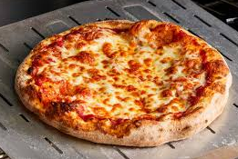

Pizza

Homemade pizza recipe
The following is a recipe I've used to make pizza at home. It's a pretty simple
recipe, and although it isn't going to win any prizes, its a good option for
when you need a quick dinner.
Ingredients
- Flat bread, like used for wraps
- Tomato based pizza sauce
- Cheese
- 200g salami
- 1/2 cup of olives, cut in half, pips removed
Steps
- Turn the oven on to 200 degrees celcius
- Spread the pizza sauce over the flat bread. I like to just use a
spoon to get a roughly even spread.
- Grate the cheese and use it to cover the part of the base with pizza sauce on it
- Cover the pizza with the salami and olives
- Place the pizza in the oven for 15 minutes. Then remove and allow it to
cool for 5 minutes before serving.
Home